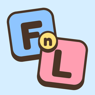

TulipBro-Games(이하 "운영자")는 영어 단어 대결 게임 First n Last(이하 "게임")를 운영하며, 게임을 하는 데 꼭 필요한 정보만 처리합니다. 게임은 이름, 이메일, 전화번호, 위치, 사진을 받지 않습니다.
| 익명 고유번호 | 기기마다 자동으로 만들어지는 무작위 번호입니다. 기록 저장, 온라인 대결, 닉네임 중복 방지에 씁니다. 개인을 알아볼 수 있는 정보와 연결되지 않습니다. |
|---|---|
| 닉네임 | 직접 만든 경우에만 저장합니다. 온라인 대결에서 상대에게 보이고, 같은 닉네임을 두 사람이 쓰지 못하게 합니다. 실명 대신 별명을 써 주세요. |
| 게임 기록 | 레벨, 경험치, 오늘의 미션, 도장, 배지, 판수와 승패, 찾은 단어 수, 가장 긴 단어. 기록 백업과 내 정보 화면에 씁니다. |
| 이용 정보 | 처음·마지막 접속 시각, 언어 설정, 홈 화면 앱인지 여부, 지금 접속 중인지와 어느 화면에 있는지, 날짜별 판수. 서비스 운영과 이용 통계에 씁니다. |
| 온라인 대결 정보 | 방 코드, 두 사람의 익명 고유번호와 닉네임, 고른 글자, 입력한 단어. 대결을 진행하는 데 씁니다. |
통계는 운영자만 볼 수 있으며, 개인을 알아보거나 광고를 맞춤으로 보여 주는 데 쓰지 않습니다.
게임 기록, 닉네임, 소리·음악·언어 설정, 튜토리얼과 인트로 표시 여부를 기기의 브라우저 저장소에 보관합니다. 인터넷 없이도 열리도록 게임 화면과 그림 파일도 기기에 저장합니다. 브라우저 데이터를 지우면 함께 지워집니다.
게임은 다음 서비스를 이용합니다. 정보는 게임을 이용할 때 인터넷으로 전송됩니다.
| Google Firebase (Google LLC) | 익명 로그인, 데이터 저장. 데이터베이스는 싱가포르에 있으며, 로그인 처리는 미국 등 Google 서버에서 이루어질 수 있습니다. 위 1번의 정보를 위 3번의 기간 동안 보관합니다. |
|---|---|
| GitHub Pages (GitHub, Inc.) | 게임 화면을 전달합니다(미국). 접속 시 IP 주소 등이 서버 기록으로 남을 수 있습니다. |
| Google Fonts, jsDelivr | 글씨체와 프로그램 파일을 전달합니다. 접속 시 IP 주소가 전송됩니다. |
운영자는 정보를 판매하거나 다른 곳에 제공하지 않습니다. 법에 따라 요구되는 경우는 예외입니다.
현재 게임에는 광고가 없습니다. 광고를 넣게 되면 이 방침을 먼저 고쳐 알리고, 아이들도 이용하는 게임이므로 맞춤형 광고는 쓰지 않습니다.
게임은 어른과 아이가 함께 즐길 수 있도록 만들었습니다. 개인을 알아볼 수 있는 정보를 받지 않으며, 닉네임에는 부적절한 말을 쓸 수 없습니다. 보호자는 아래 연락처로 아이의 기록 삭제를 요청할 수 있습니다.
이용자(만 14세 미만은 법정대리인)는 언제든 자신의 정보 열람, 정정, 삭제, 처리 정지를 요청할 수 있습니다. 요청할 때는 게임의 닉네임이나, 내 정보 화면에서 확인할 수 있는 정보를 함께 알려 주세요.
책임자: TulipBro-Games
이메일: tulipbro.games@gmail.com
개인정보 침해 신고나 상담은 개인정보침해신고센터(국번 없이 118, privacy.kisa.or.kr)에도 할 수 있습니다.
한글 단어 모드의 단어 목록은 국립국어원 표준국어대사전과 한국어 학습용 어휘 목록, 한국어 위키백과 사용 빈도를 바탕으로 만들었습니다(CC BY-SA 4.0, korean-noun·pd-korean-noun-list-for-wordles 자료 이용). 고유명사와 부적절한 단어를 빼는 등 일부를 고쳤으며, 고친 목록도 같은 조건으로 이용할 수 있습니다.
이 방침이 바뀌면 이 페이지에 시행일과 함께 알립니다.
TulipBro-Games ("we") runs First n Last (the "game"), an English word duel game, and handles only the information the game needs to work. The game does not ask for your name, email, phone number, location or photos.
| Anonymous ID | A random number created for each device. Used to save progress, run online matches and keep nicknames unique. It is not linked to anything that identifies you. |
|---|---|
| Nickname | Saved only if you make one. Shown to opponents in online matches and kept unique. Please use a nickname, not your real name. |
| Game progress | Level, XP, daily missions, stamps, badges, games played and won, words found, longest word. Used for backup and the profile screen. |
| Usage information | First and last visit time, language, whether the game runs as a home-screen app, whether you are online now and on which screen, and games per day. Used to run the service and count usage. |
| Online match data | Room code, both players' anonymous IDs and nicknames, picked letters and entered words. Used to run the match. |
Statistics are visible only to us. They are not used to identify you or to personalise ads.
Your progress, nickname, sound, music and language settings, and whether you have seen the tutorial and intro are kept in your browser's storage. The game's page and pictures are also stored so it opens without a connection. Clearing your browser data removes them.
The game uses these services. Information is sent over the internet while you play.
| Google Firebase (Google LLC) | Anonymous sign-in and data storage. The database is in Singapore; sign-in may be processed on Google servers in the United States and elsewhere. Keeps the data in section 1 for the periods in section 3. |
|---|---|
| GitHub Pages (GitHub, Inc.) | Delivers the game's pages (United States). Server logs may record your IP address. |
| Google Fonts, jsDelivr | Deliver fonts and program files. Your IP address is sent when they load. |
We do not sell or share your information, except where the law requires it.
The game has no ads today. If we add ads, we will update this policy first. Because children play too, we will not use personalised ads.
The game is made for adults and children to enjoy together. It does not collect information that identifies a person, and nicknames cannot contain inappropriate words. A parent or guardian can ask us to delete a child's data using the contact below.
You (or a parent or guardian for a child) can ask at any time to see, correct or delete your information, or to stop its use. Please include your nickname or details from your profile screen so we can find it.
Privacy contact: TulipBro-Games
Email: tulipbro.games@gmail.com
The Korean word mode uses a list built from the Standard Korean Language Dictionary and the Korean learners' vocabulary list (National Institute of Korean Language) with usage counts from Korean Wikipedia (CC BY-SA 4.0, via the korean-noun and pd-korean-noun-list-for-wordles packages). We removed proper nouns and unsuitable words; the changed list is shared under the same licence.
If this policy changes, we will post the new version here with its effective date.